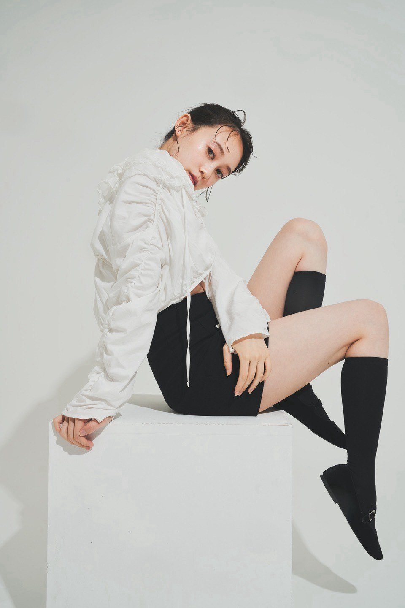
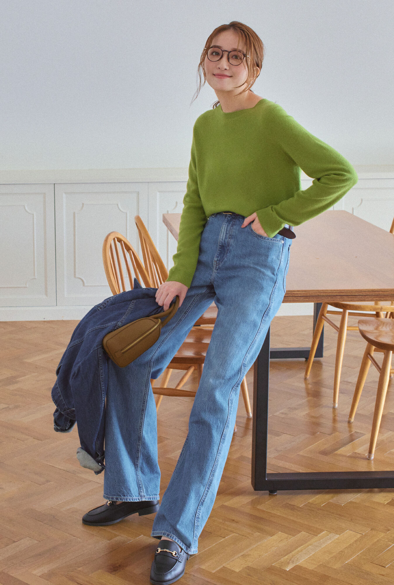
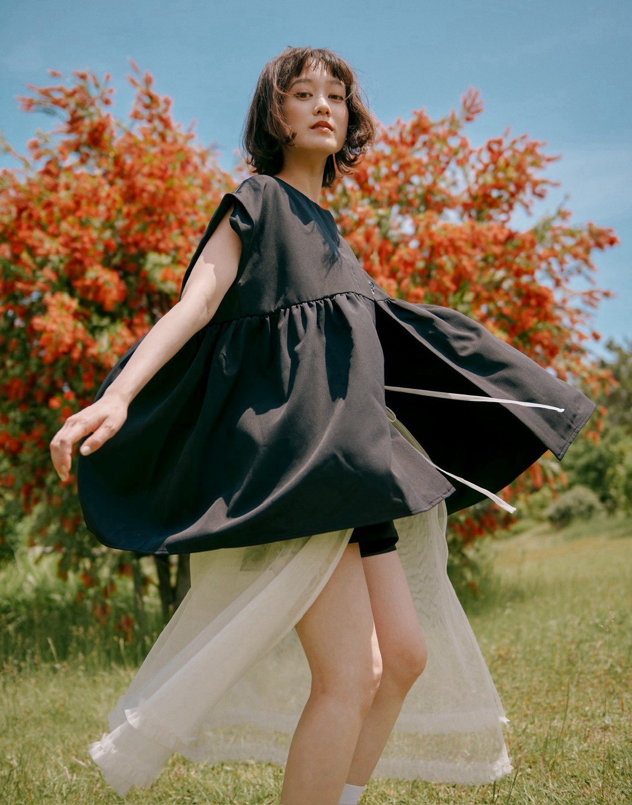
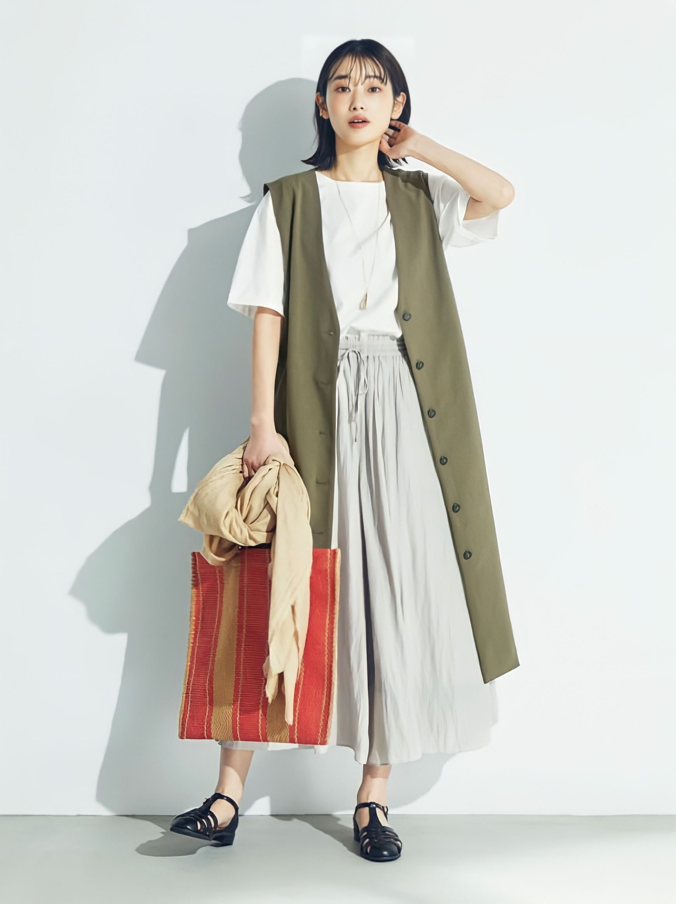
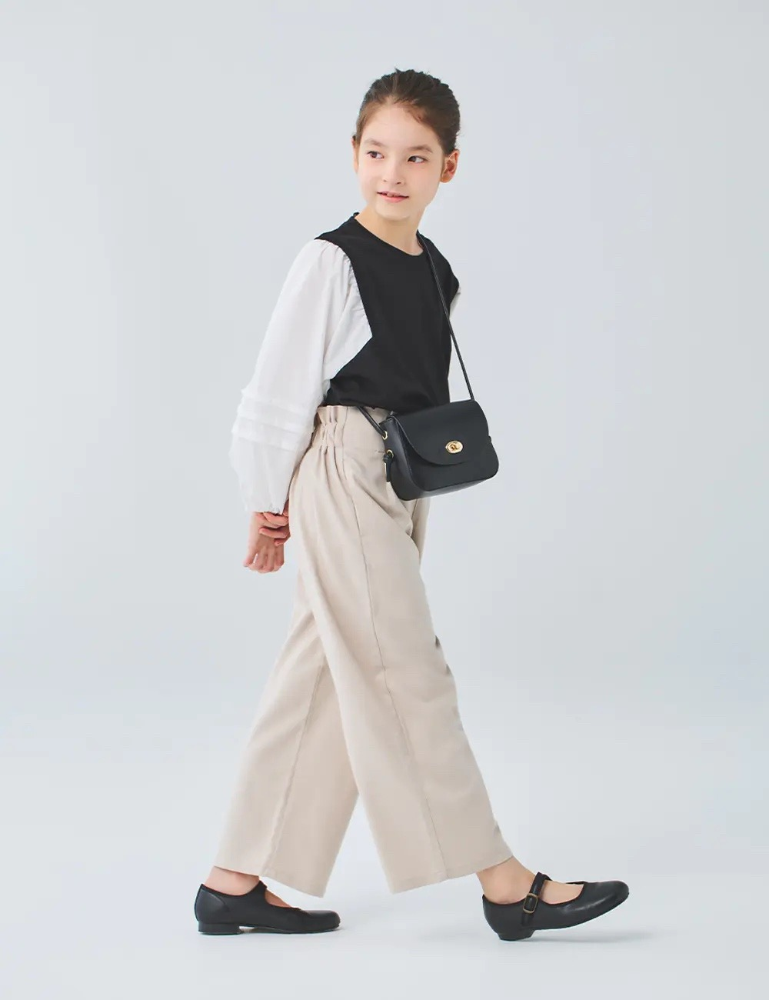
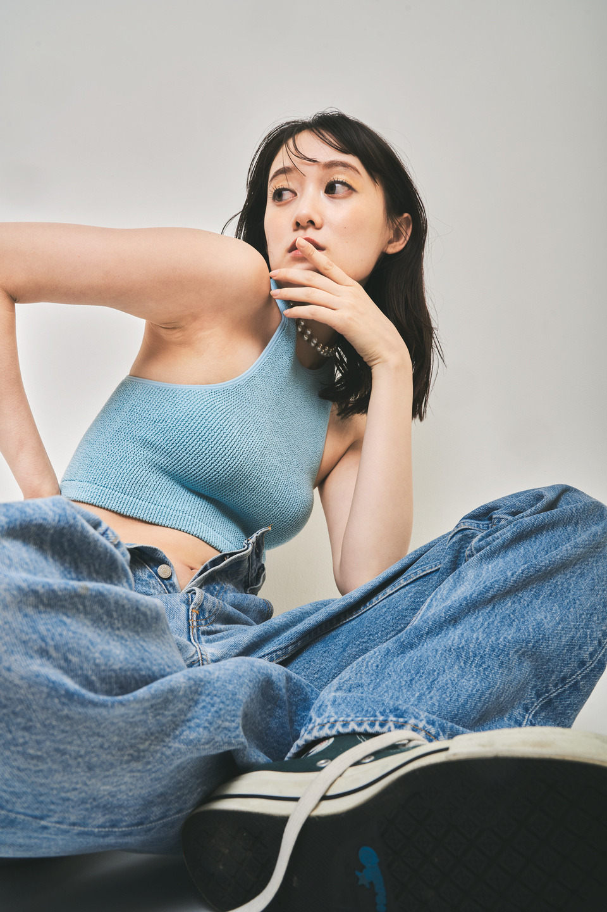

13B〜13D の素材づくり
13B（撕纸）・13C（纸胶带）・13D（晾衣绳）は、写真を「紙で作り直した絵」や「晾衣绳の場景」がないと作れません。自分で描くのはやめて、Gemini などで作ってもらう形にしました。下の写真をダウンロードし、提示詞をコピーして一緒に渡してください。できた画像をこの会話に送ってもらえれば、それで 13B〜13D を組みます。
- 写真を1枚ダウンロード（写真の下の「原图」）。
- 13B か 13C の提示詞をコピーして、写真と一緒に Gemini に渡す。
- できた画像を、どの写真・どちらの版か分かるように送る（例：「01 撕纸」）。
まずは 01〜03 の3枚だけで十分です。気に入ったら残りも作ります。13D は写真を使わず、場景を1枚作るだけです。
使う写真（6枚）












13B 撕纸拼贴（上：原照片／下：撕纸）
審美図鑑「手工撕纸拼贴对照图」の提示詞がもと。人物写真向けに「人を切らない」「顔は描かない」「文字なし」を足しました。
请根据我上传的人物时装照片，创作一幅竖版 3:4 的手工撕纸拼贴对照图。只处理这一张照片，不要和其他图合并。 主体：照片里的人物和她的整套穿搭（发型、服装的廓形、颜色、材质感和站姿 / 坐姿）。画面只围绕这一个主体，背景尽量简化。 排版：竖版 3:4，上下各占画面高度的 50%，中间以一道自然、不规则的撕纸边缘分隔，撕口露出白色的纸纤维。 上半部分：完整呈现原照片，保持原有比例、颜色和光线，不拉伸变形。人物必须完整出现，绝对不能裁掉头部、脸、手脚或衣服；如果放不下，就把照片整体缩小放在中间，两侧用原照片的背景自然延展补满。上半部分不加任何文字。 下半部分：把同一个人物和穿搭转换成手工撕纸拼贴插画，姿势和原照片一致，一眼能认出是同一套衣服。服装的颜色、版型、褶皱和层次是重点，用多层纸片叠贴表现。脸和皮肤只用一到两块肤色纸片概括，不画五官；头发用一到两块纸片表现发型。背景用少量简洁纸片概括，保留充足的米白留白。 色彩：从原照片提取配色，下半部分不超过六种主色。每张纸片一种均匀的颜色，不用明显渐变；靠不同颜色的纸片叠加表现结构和层次。 纸张质感：纸片边缘自然参差，有可见的纸纤维和毛边；纸面带轻微揉皱、颗粒和起伏；纸片层层叠贴，部分边缘略微翘起，投下柔和细小的阴影。正面俯拍，柔和自然光，哑光纸面。整体安静、质朴、有时装插画的气质。 不要：任何文字、字母、数字、Logo、水印；多个主体；裁掉人物；五官细节；背景过于复杂；颜色超过六种；单张纸片渐变；塑料或金属质感；过于整齐的切割边缘；3D 渲染。
13C 纸胶带拼贴（上：冲印照片／下：纸胶带）
審美図鑑「纸胶带拼贴」の作者原文がもと。図鑑の注意書き（人物は細かくなりすぎる・顔は1〜2枚の肌色テープで）を入れました。英字の短い題も入れない設定です（題はサイト側で付けます）。
请把我上传的这一张人物时装照片，单独制作成一张 3:4 竖版纸胶带拼贴作品。只处理这一张，不要和其他图合并。 上半部分：把原照片做成一张带白边的冲印照片，平放在暖白色笔记本纸上。照片完整呈现，保持原有比例和颜色，绝对不能裁掉人物的头部、脸、手脚或衣服。 下半部分：根据上面的照片，提取人物和整套穿搭最有辨识度的部分（发型、服装廓形、颜色、姿态），用 10–18 块中等尺寸的纸胶带重新拼出这个人物，不超过 18 块，宁可少细节。姿势和原照片一致，一眼能认出是同一套衣服。脸和皮肤只用一到两块肤色胶带概括，不画五官；不要把原照片的碎片直接贴回去。主体用平面、正面、结构化的纸胶带拼贴完成，靠明暗不同的色块、胶带叠压顺序、负形和细窄胶带表现体积和边缘，不用铅笔、墨线或绘画笔触。 胶带质感：真实的纸纤维、轻微磨损的边缘、半透明叠色、细小的重叠阴影、少量自然撕裂边和轻微折痕，有明显手工感，但不要做成立体纸雕。背景是干净的暖白色笔记本纸，有细腻自然的纸纤维，不泛黄、不脏、不过度复古。 构图：保留约 65%–80% 的大面积留白，人物约占画面宽度的 40%–55%，居中或略偏下，安静克制的编辑式构图。配色从原照片提取 4–6 种低饱和颜色，以纯色胶带为主，可以少量用条纹、格纹或圆点胶带，最多一点克制的暖色点缀。 不要：任何文字、字母、数字、标题、Logo、水印；票据、邮票、标签、贴纸、印章等装饰；普通矢量插画；照片滤镜；写实绘画；3D 纸雕；密集手帐；胶带过多；强烈折痕；数字渐变；光滑塑料质感。
13D 晾衣绳の場景（写真は使わない・1枚）
審美図鑑「The Hat Line」の構想（阳台、晾衣绳）を、作品写真を夹子で挂ける場景に置き換えました。写真はサイト側で夹子の下に吊るします。横長（PC用）と縦長（スマホ用）の2枚あると理想です。
Front view, straight-on, of a quiet sunlit wall in a stylist's studio: warm off-white plaster wall (around #EFE8DC) with very subtle texture, soft dappled leaf shadows drifting across it from a window on the left, a thin natural-linen clothesline stretched across the whole width with a gentle sag, and eight plain light-wood clothes pegs clipped onto the line at roughly even spacing, each peg empty and pointing straight down. Nothing hanging from the pegs. Lots of clean empty wall below the line (the lower 70% of the image is empty wall), so photographs can be added later under each peg. Calm, editorial, natural light, photographic realism, high resolution. No people, no clothes, no photos, no furniture, no plants in frame, no text, no logos, no watermark. Make two versions: a 16:9 landscape and a 9:16 portrait (in the portrait one the line runs across the upper part and holds four pegs).